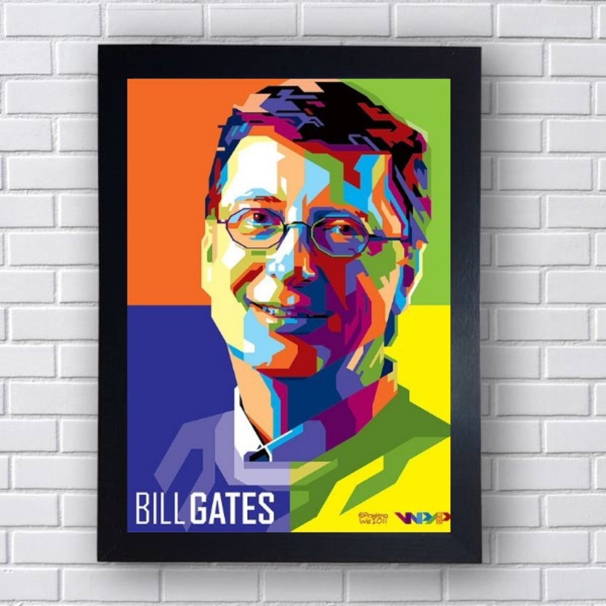
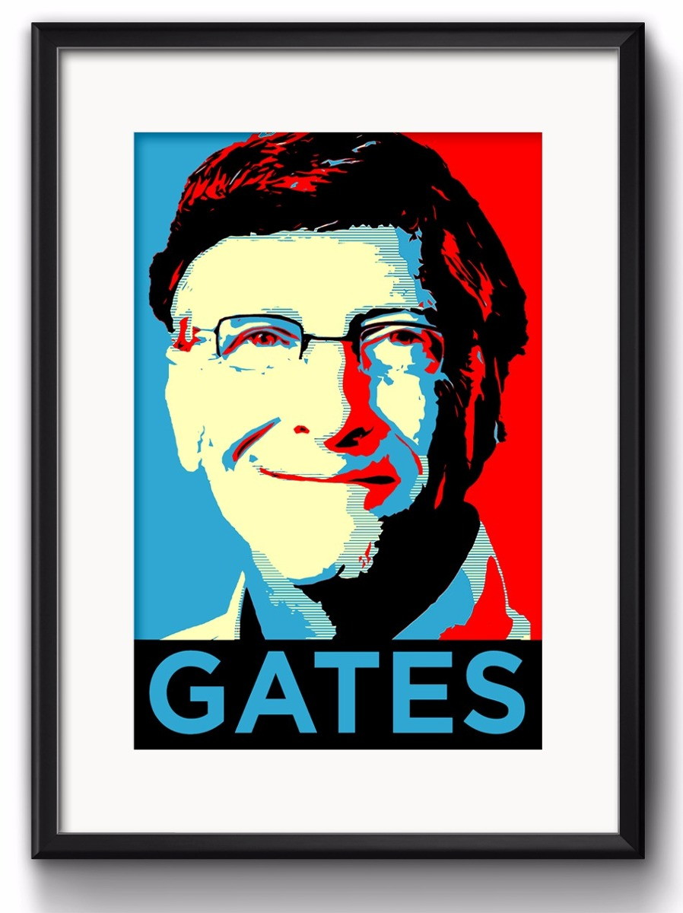
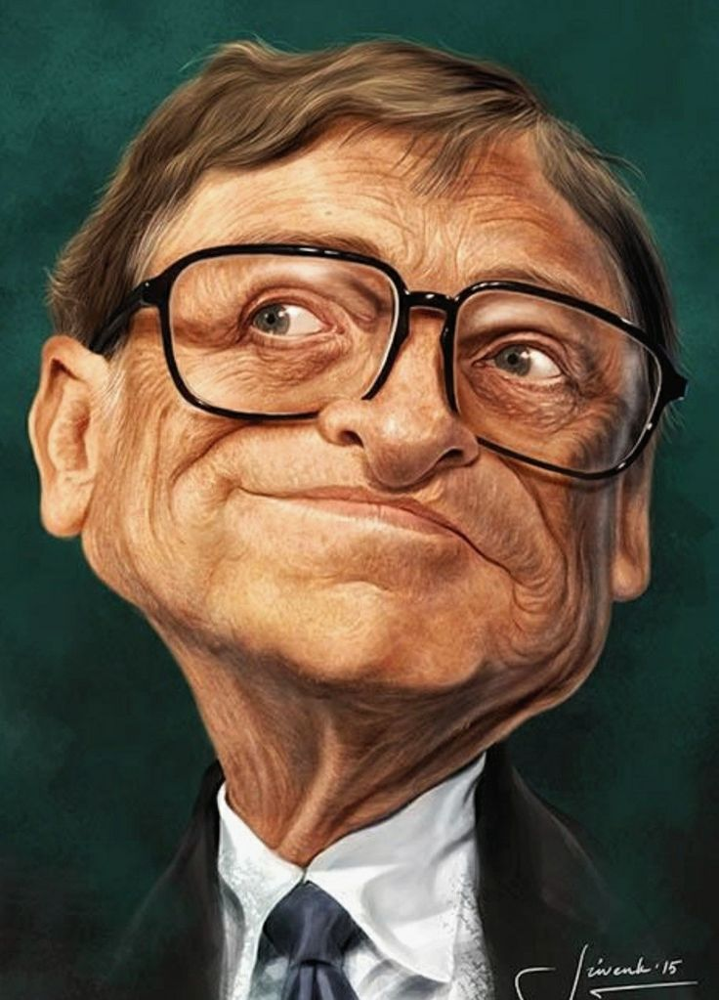

Bill Gates foi o criador da microsoft, sendo ele um herói.
William Henry Gates III, mais conhecido como Bill Gates, é um magnata, empresário, diretor executivo, investidor, filantropo e autor americano, que ficou conhecido por fundar, junto com Paul Allen a Microsoft, a maior e mais conhecida empresa de software do mundo em termos de valor de mercado.
Bill Gates é um empresário americano mundialmente conhecido por fundar a Microsoft, a mais conhecida empresa de software do mundo. É também reconhecidamente um dos pioneiros na revolução do computador voltado para o consumidor comum.
Atualmente, Gates é a 4º pessoa mais rica do mundo e tem uma fortuna avaliada em US$ 129 bilhões, segundo o levantamento da revista "Forbes". Ele fica atrás apenas Elon Musk (Tesla e SpaceX), Jeff Bezos (Amazon e Blue Origin) e Bernard Arnault (Louis Vuitton).


